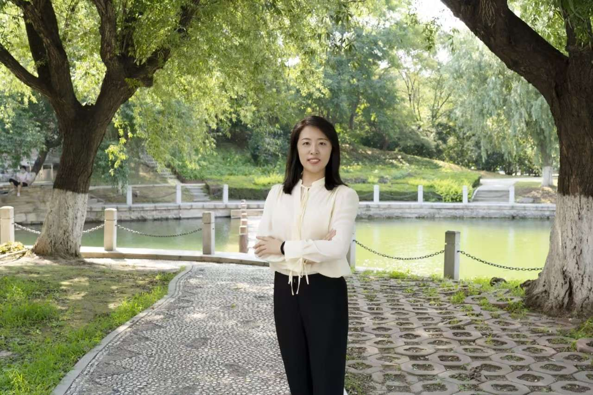
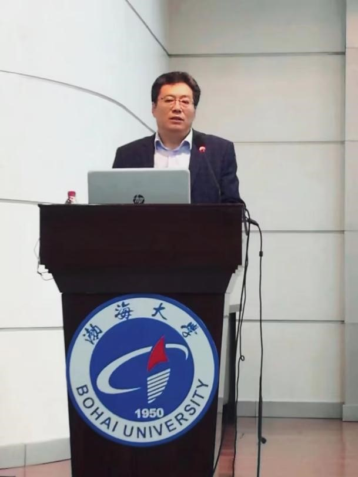
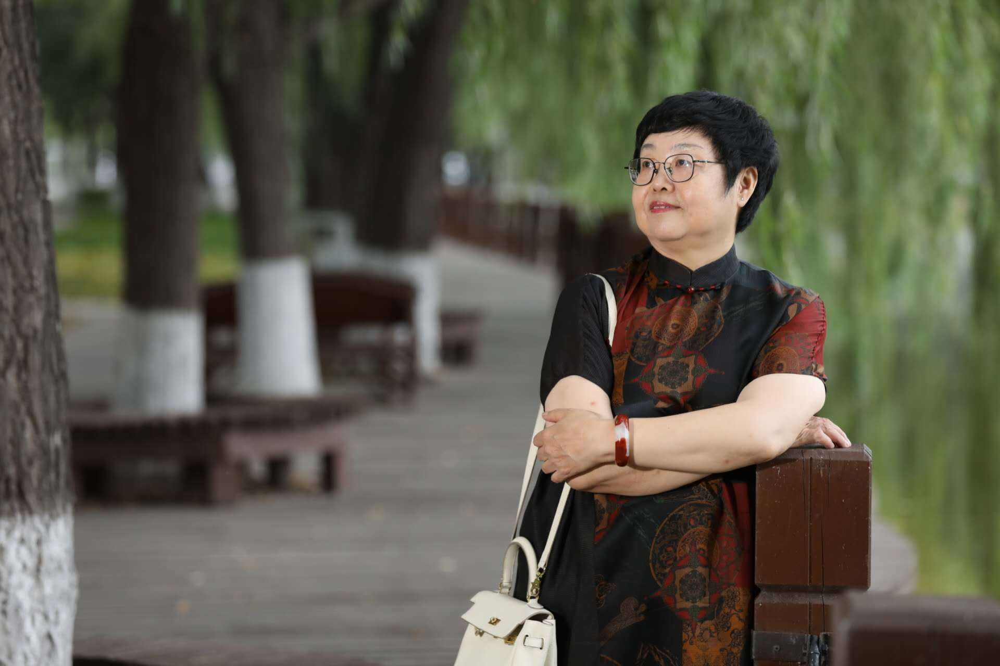
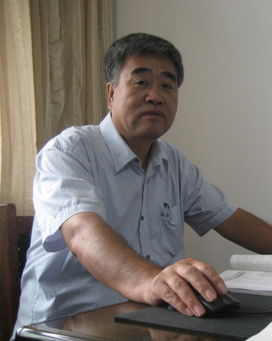
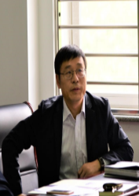
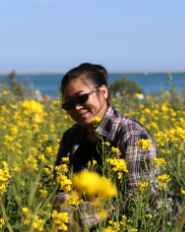

郭艳东，女，1981年10月生，满族，博士，教授，硕士生导师，现为数学科学学院副院长。辽宁省教学名师，“兴辽计划”青年拔尖人才，辽宁省百千万人才“万人”层次，国家自然科学基金委评审专家，辽宁省产业（创业）投资引导基金评审专家，锦州市优秀科技工作者，锦州市学术带头人。近年来致力于过程模拟与优化、算法设计分析、离子液体的多尺度模拟与优化关键技术的研究。主持参与省部级以上项目22项，其中包括国家自然科学基金项目3项，辽宁省自然科学基金7项，辽宁省教育厅项目10项等。在《Computers & Industrial Engineering》《Computer Systems Science and Engineering》《中国科学》《自动化学报》等学术期刊发表SCI、EI检索论文10余篇，专著1部，发明专利5项。获得省级教学成果奖3项，多次获得辽宁省自然科学学术成果和锦州市自然科学学术成果奖。

白凤翎教授，2022年度辽宁省教学名师，辽宁省水产食品安全专业委员会副主任委员、辽宁省水产学会水产品加工专业委员会委员、辽宁省食品科学技术学会常务理事，辽宁省水产学会理事、中国食品科学技术学会乳酸菌分会理事、酿造分会理事，中国农业工程学会农产品加工及贮藏工程分会理事。兼任《乳品科学与技术》编委，教育部学位中心研究生论文评议专家，《食品科学》《水产科学》《食品工业科技》等期刊审稿人，主要从事食品质量与安全控制，乳酸菌资源开发与利用等方面研究。先后主持或参与国家自然科学基金、科技部、辽宁省科技厅等科研项目12项，发表学术论文130余篇，其中SCI/EI论文40多篇。主持省一流课程1门，校级精品课、示范课、案例课等3门。编写教材3部，获辽宁省教学成果奖1项。主讲课程：食品安全学、现代食品微生物学、食品安全案例。

刘芳教授，博士，渤海大学师范学院院长，硕士研究生导师。研究方向教师教育。担任本科和研究生历史课程与教学论、教学设计、演讲学、班级管理等课程教学工作，获辽宁省精品课和一流课程、辽宁省教学成果一、二等奖，辽宁省基础教育教师培训工作先进工作者，全国教育专业委员会学位研究生教育指导委员会教育硕士先进指导教师，渤海大学优秀共产党员、先进工作者等荣誉。教育部师范专业认证专家，辽宁省教育教学质量评价指导专业委员会副主任，辽宁省中小学骨干教师培训和辽宁省高校骨干教师培训专家。

任骏原教授，2013年度辽宁省教学名师，主要从事电子信息工程方面的教学和研究，获辽宁省教学成果二等奖3项，主持完成辽宁省教改项目2项，主编教材3部，先后获得获得渤海大学教学骨干、渤海大学教学带头人、渤海大学教书育人先进个人、渤海大学优秀共产党员、辽宁省实验室建设与管理先进个人等荣誉。

李春杰教授，2015年度辽宁省教学名师，辽宁省普通高等学校本科专业综合评价评审专家，辽宁省一流本科教育示范计算机科学与技术专业负责人。长期从事计算机教学与科学研究工作，曾获辽宁省和校级教学成果三等奖4项，主持省级精品课程3门，主持省校级教学改革立项9项。科学研究方向为计算机网络技术和现代教育技术。发表论文23篇，其中EI检索3篇，CPCI检索1篇，出版著作1部，编写教材5部，其中主编计算机网络教材为校级规划教材。主要研究领域：计算机网络；现代教育技术。
张满林教授，2019年度辽宁省教学名师，辽宁省高等学校优秀中青年骨干教师，兼任中国工业经济学会理事、辽宁省管理科学研究会副理事长、辽宁省金融法学会副会长，辽宁省普通高等学校经济学类专业教学指导委员会委员、辽宁省财经类专业学位研究生教育指导委员会委员，中国注册会计师协会非执业会员。国家社科基金项目鉴定专家，教育部学位中心研究生论文评议专家。主要从事区域经济发展、农村经济等方面的研究。先后主持或参与国家自然科学基金、教育部人文社科项目、辽宁省社科基金等科研项目45项；在《经济学动态》等期刊公开发表100余篇学术论文，出版专著5部、教材12部。获辽宁省自然科学学术成果二等奖3项、三等奖2项，获辽宁省教学成果奖2项。主讲课程：管理学、微观经济学。

程迎新教授，2016年度辽宁省教学名师，辽宁省外语协会理事。现为渤海大学文理学院大学外语部主任。辽宁省青年骨干教师，渤海大学骨干教师。主持并完成国家及辽宁省省部级科研项目16项，出版学术专著1部，主编教材12部,参编教材4部，发表学术论文20余篇。连续三届获得辽宁省优秀教学成果二等奖，主编的教材《新思路大学英语听说教程》获批为国家“十三五”规划教材，2015年获评为辽宁省优秀教师。
郑淑媛教授，2017年度辽宁省教学名师，辽宁省马克思主义理论类教学指导委员会委员，渤海大学哲学学科责任教授，主要研究方向为中国哲学。主持国家社会科学基金项目、辽宁省社会科学基金规划项目、辽宁省教育厅科研项目等10余项。出版专著《先秦儒家的精神修养》《老庄精神修养学》《我们是谁？——中国传统精神生活的迷失与回归》等4部，主编《伦理学》《中西方哲学史与哲学思维训练》等教材3部。在《天津社会科学》《江汉论坛》《中州学刊》等刊物上发表文章20余篇。获得辽宁省教学成果奖等科研、教学奖励近10项。
